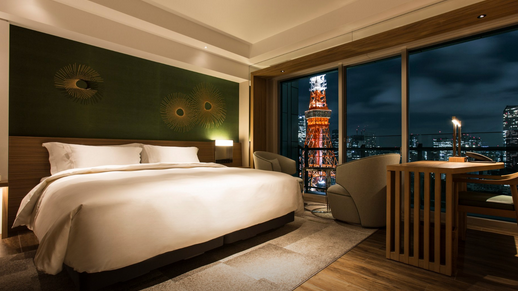
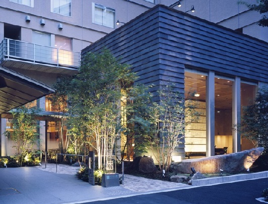

Experience Tokyo Hospitality!
The Prince Park Tower Tokyo
Some of the things that make The Prince Park Tower Tokyo so attractive are its breathtaking views of and proximity to Downtown Tokyo. In just 10
minutes walk, guests will find themselves in the heart of Tokyo. The hotel comes complete with a boutique experience and open, panoramic views of downtown
Tokyo. It is simply the best Tokyo has to offer.
The 5-star hotel features a regal design, indoor and outdoor pools, concierge service, in-room cuisine and many more luxury features. Breakast is included.
Unfortunately, due to the high demand for the hotel and its excellent location, the price can be steep at 500.00 USD per night (This hotel is included in the
Premium Package). Reservations are also subject to availability, so travellers who wish to opt for this package must reserve in advance.

Hotel Niwa Tokyo
Hotel Niwa has always been heralded as one of Tokyo’s top hotels without an outrageous price tag. One of the most beautiful and calm hotels Tokyo has
outside of its city centre, its relative affordability and quietness makes it a must-see for tourists who want a break from all the hustle and bustle.
Hotel Niwa features a modern design, large outdoor park and golf field, concierge service, a small theatre and in-house gym. Breakast is included.
Hotel Niwa is priced at 200.00 USD per night, a low price for a 5-star hotel (This hotel is included in the Standard Package). However, no hotel is perfect, and
in order to be more affordable, it is located quite far from downtown Tokyo, requiring at least 15 minutes by subway. Tourists from some regions may be
disappointed, as hotel staff are familiar with fewer languages compared to downtown hotels.

Hotel Sunroute Plaza Shinjuku
Hotel Sunroute is the best option for travellers on a budget who want to stay in downtown Toyko. At just 100.00 USD per night, this is by far our most
affordable hotel option (This hotel is included in the Budget Package).
Sunroute Plaza does not skimp out on amenities either. The hotel includes an in-house spa service, concierge service, on-demand movies and gym facilities.
Breakast is included.
The hotel is in the heart of downtown Tokyo, close to all the top shopping hubs and bustling bars. In fact many travellers with big budgets opt for this hotel
specifically because of its proximity to Tokyo's nightlife.